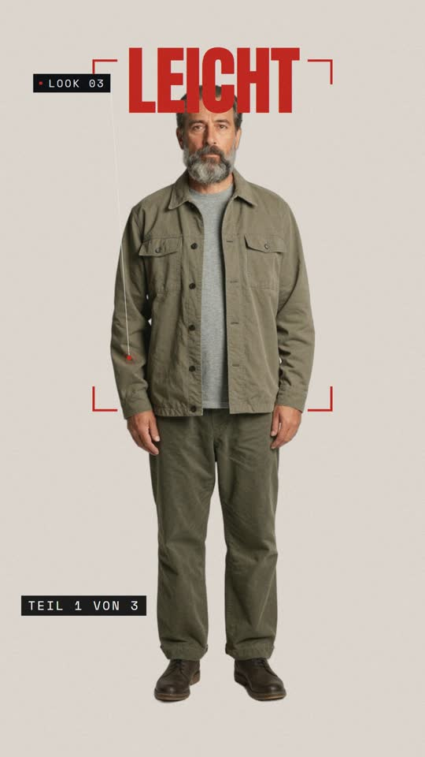
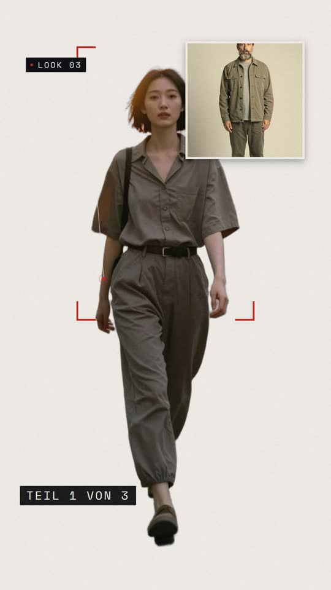
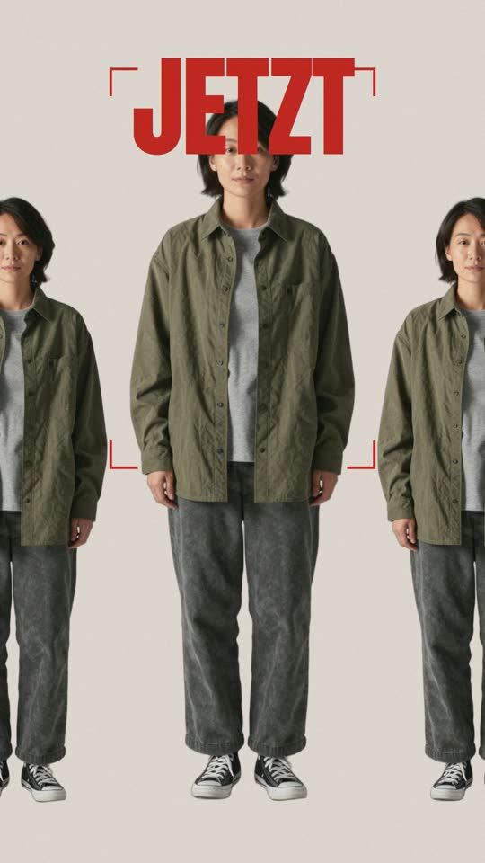

Auswahl-Lookbook



brauchtfotos-figur footage-ort nur-typolebendig
Aus einer Reihe von Outfits wird eines gewählt und dann Ort für Ort vorgeführt; eine riesige Schlagzeile tippt sich Buchstabe für Buchstabe als Selbstgespräch, Orte wechseln durch die Silhouette der Figur, Sticker-Klone stehen daneben.
Der Kern
- Auswahl aus einer Reihe und dann ein Look an vielen Orten
- Schlagzeile tippt Buchstabe für Buchstabe als innerer Monolog
- Ortswechsel durch die Figur-Silhouette mit Sticker-Klonen